R4DS Exercises
Overview
I am guiding a group walkthrough of Garrett Grolemund and Hadley Wickam’s great book R for Data Science. We are trying to cover a chapter of material per week and have a one-hour weekly code review to sit together and discuss the Excersises. If you live around Charlottesville and are interested in joining, there is brief but intense vetting process :)
These are the answers to the Excercises we have covered so far and will update after our mostly weekly meetings.
3 ggplot2
3.2.4 First Steps
library(magrittr) # %<>%
library(tidyverse)- Run ggplot(data = mpg). What do you see?
ggplot(mpg) # grey square
# this is the initialized plotting areaHow many rows are in mpg? How many columns?
dim(mpg)## [1] 234 11What does the drv variable describe? Read the help for ?mpg to find out.
?mpg Make a scatterplot of hwy vs cyl.
ggplot(mpg) +
geom_point(aes(x = hwy, y = cyl)) What happens if you make a scatterplot of class vs drv? Why is the plot not useful?
What happens if you make a scatterplot of class vs drv? Why is the plot not useful?
ggplot(mpg) +
geom_point(aes(x = class, y = drv))# factor vs factor points
# need some sort of density/count viz instead3.3.1 Aesthetics
- What’s gone wrong with this code? Why are the points not blue?
ggplot(data = mpg) +
geom_point(mapping = aes(x = displ, y = hwy, color = "blue"))
# aes is for mapping columns in mpg by name
# doesn't understand color names inside aes() so uses default color scale
ggplot(data = mpg) +
geom_point(mapping = aes(x = displ, y = hwy), color = "blue")
# just move it outside- Which variables in mpg are categorical? Which variables are continuous? (Hint: type ?mpg to read the documentation for the dataset). How can you see this information when you run mpg?
str(mpg) # chr/fct is categorical, int/num is numeric## Classes 'tbl_df', 'tbl' and 'data.frame': 234 obs. of 11 variables:
## $ manufacturer: chr "audi" "audi" "audi" "audi" ...
## $ model : chr "a4" "a4" "a4" "a4" ...
## $ displ : num 1.8 1.8 2 2 2.8 2.8 3.1 1.8 1.8 2 ...
## $ year : int 1999 1999 2008 2008 1999 1999 2008 1999 1999 2008 ...
## $ cyl : int 4 4 4 4 6 6 6 4 4 4 ...
## $ trans : chr "auto(l5)" "manual(m5)" "manual(m6)" "auto(av)" ...
## $ drv : chr "f" "f" "f" "f" ...
## $ cty : int 18 21 20 21 16 18 18 18 16 20 ...
## $ hwy : int 29 29 31 30 26 26 27 26 25 28 ...
## $ fl : chr "p" "p" "p" "p" ...
## $ class : chr "compact" "compact" "compact" "compact" ...- Map a continuous variable to color, size, and shape. How do these aesthetics behave differently for categorical vs. continuous variables?
ggplot(mpg, aes(displ, cty, color = hwy)) +
geom_point() + # continuous graident
labs(title = "Color")
ggplot(mpg, aes(displ, cty, size = hwy)) +
geom_point() + # continuous gradient
labs(title = "Size")
# Error: A continuous variable can not be mapped to shape
ggplot(mpg, aes(displ, cty, shape = hwy)) +
geom_point() + # can't map continuous to shape
labs(title = "Shape")- What happens if you map the same variable to multiple aesthetics?
ggplot(mpg, aes(displ, cty, fill = trans)) +
geom_point(shape = 21, size = 4)
# you waste resolution- What does the stroke aesthetic do? What shapes does it work with? (Hint: use ?geom_point)
ggplot(mpg, aes(displ, cty, fill = trans)) +
geom_point(stroke = 2, shape = 21, size = 4)
# stroke is the outline thickness of shapes 21:25- What happens if you map an aesthetic to something other than a variable name, like aes(colour = displ < 5)?
ggplot(mpg, aes(drv)) +
geom_bar() +
facet_wrap(~hwy) # bins it
3.5.1 Facets
What happens if you facet on a continuous variable?
ggplot(mpg, aes(drv)) +
geom_bar() +
facet_wrap(~hwy) # coherces to intervals
What do the empty cells in plot with facet_grid(drv ~ cyl) mean? How do they relate to this plot?
ggplot(data = mpg) +
geom_point(mapping = aes(x = drv, y = cyl)) +
facet_wrap(drv ~ cyl) # combinations do not exist
# facet_wrap() will drop them What plots does the following code make? What does . do?
ggplot(data = mpg) +
geom_point(mapping = aes(x = displ, y = hwy)) +
facet_grid(drv ~ .) # compares against nothing if var is first (facets on y)
ggplot(data = mpg) +
geom_point(mapping = aes(x = displ, y = hwy)) +
facet_grid(~ cyl) # don't need a dot if var is second (facets on x)
Take the first faceted plot in this section:
What are the advantages to using faceting instead of the colour aesthetic? What are the disadvantages? How might the balance change if you had a larger dataset?
ggplot(data = mpg) +
geom_point(mapping = aes(x = displ, y = hwy)) +
facet_wrap(~ class, nrow = 2)
str(diamonds) # a larger dataset## Classes 'tbl_df', 'tbl' and 'data.frame': 53940 obs. of 10 variables:
## $ carat : num 0.23 0.21 0.23 0.29 0.31 0.24 0.24 0.26 0.22 0.23 ...
## $ cut : Ord.factor w/ 5 levels "Fair"<"Good"<..: 5 4 2 4 2 3 3 3 1 3 ...
## $ color : Ord.factor w/ 7 levels "D"<"E"<"F"<"G"<..: 2 2 2 6 7 7 6 5 2 5 ...
## $ clarity: Ord.factor w/ 8 levels "I1"<"SI2"<"SI1"<..: 2 3 5 4 2 6 7 3 4 5 ...
## $ depth : num 61.5 59.8 56.9 62.4 63.3 62.8 62.3 61.9 65.1 59.4 ...
## $ table : num 55 61 65 58 58 57 57 55 61 61 ...
## $ price : int 326 326 327 334 335 336 336 337 337 338 ...
## $ x : num 3.95 3.89 4.05 4.2 4.34 3.94 3.95 4.07 3.87 4 ...
## $ y : num 3.98 3.84 4.07 4.23 4.35 3.96 3.98 4.11 3.78 4.05 ...
## $ z : num 2.43 2.31 2.31 2.63 2.75 2.48 2.47 2.53 2.49 2.39 ...# helps to break up data into sub-groups
ggplot(diamonds, aes(carat, price, color = clarity)) +
geom_point() +
stat_smooth(method = "lm") +
facet_grid(~cut)
# depends on the trends/comparisons
# acts as another resolution dimRead ?facet_wrap. What does nrow do? What does ncol do? What other options control the layout of the individual panels? Why doesn’t facet_grid() have nrow and ncol argument?
?facet_wrap
# build a grid based on number of rows/cols
# allows panels to fill grid by rows or columns too
?facet_grid
# build all possible var combos based on levels of fct/as.factor(chr)
# control order/position with levels(fct) in both3.6.1 Geoms
- What geom would you use to draw a line chart? A boxplot? A histogram? An area chart?
# eval = F
geom_line()
geom_boxplot()
geom_histogram()
geom_density()
geom_area()- Run this code in your head and predict what the output will look like. Then, run the code in R and check your predictions.
ggplot(data = mpg, mapping = aes(x = displ, y = hwy, color = drv)) +
geom_point() +
geom_smooth(se = FALSE)## `geom_smooth()` using method = 'loess'
# a scatter plot with a trend smooth
# defaults to loess (Localy weighted polynomial regression)3a. What does show.legend = FALSE do? What happens if you remove it?
ggplot(data = mpg, mapping = aes(x = displ, y = hwy, color = drv)) +
geom_point() +
geom_smooth(show.legend = F)## `geom_smooth()` using method = 'loess'
# removes legend for a specific layer
# avoid/make confustion?3b. Why do you think I used it earlier in the chapter?
#to avoid visual confustion? tricky example?- What does the se argument to geom_smooth() do?
ggplot(data = mpg, mapping = aes(x = displ, y = hwy, color = drv)) +
geom_point() +
geom_smooth() # shows a confidence interval, .95 default## `geom_smooth()` using method = 'loess'
Will these two graphs look different? Why/why not?
ggplot(data = mpg, mapping = aes(x = displ, y = hwy, color = cyl, group = cyl)) +
geom_point() +
geom_smooth()## `geom_smooth()` using method = 'loess'
ggplot() +
geom_point(data = mpg, mapping = aes(x = displ, y = hwy)) +
geom_smooth(data = mpg, mapping = aes(x = displ, y = hwy))## `geom_smooth()` using method = 'loess'
# no, every sub-layer tries to inherit from the top layer, unless "inherit.aes = F"- Recreate the R code necessary to generate the following graphs.
# try to change/add one argument per interation
ggplot(mpg, aes(displ, hwy)) +
geom_point() +
stat_smooth(se = F)## `geom_smooth()` using method = 'loess'
ggplot(mpg, aes(displ, hwy, group = drv)) + # establish a grouping var
geom_point() +
stat_smooth(se = F)## `geom_smooth()` using method = 'loess'
ggplot(mpg, aes(displ, hwy, color = drv)) + # color var does grouping by default
geom_point() +
stat_smooth(se = F)## `geom_smooth()` using method = 'loess'
ggplot(mpg, aes(displ, hwy, color = drv)) +
geom_point() +
stat_smooth(aes(color = NULL), se = F) # turn off color group for this layer## `geom_smooth()` using method = 'loess'
ggplot(mpg, aes(displ, hwy, color = drv)) +
geom_point() +
stat_smooth(aes(color = NULL, linetype = drv), se = F) # turn on linetype aes for this layer## `geom_smooth()` using method = 'loess'
ggplot(mpg, aes(displ, hwy, fill = drv)) +
geom_point(shape = 21, size = 4, stroke = 3, color = "white") +
theme_grey()
28 Polishing ggplot2
28.2.1 Label
- Create one plot on the fuel economy data with customised title, subtitle, caption, x, y, and colour labels.
ggplot(mpg, aes(displ, hwy)) +
geom_point(aes(colour = class)) +
geom_smooth(se = FALSE) +
labs(title = "My title",
subtitle = "My sub-title",
x = "Engine displacement (L)",
y = "Highway fuel economy (mpg)",
caption = "My caption",
colour = "Car type"
)## `geom_smooth()` using method = 'loess'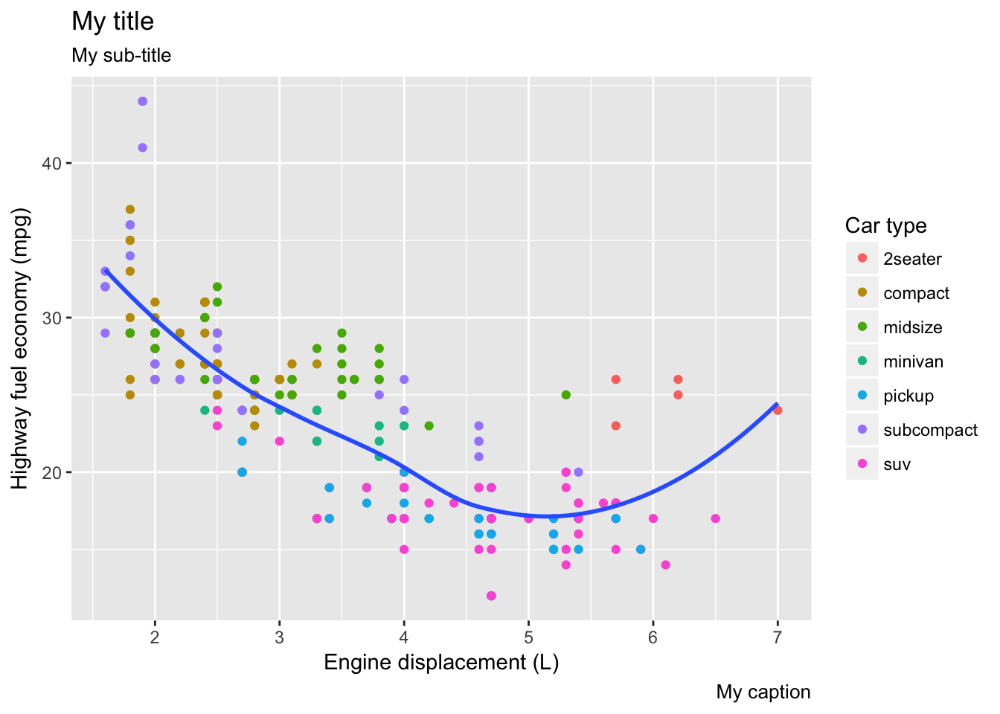
- The geom_smooth() is somewhat misleading because the hwy for large engines is skewed upwards due to the inclusion of lightweight sports cars with big engines. Use your modelling tools to fit and display a better model.
mpg_wo_2seaters <- filter(mpg, class != "2seater")
ggplot(mpg, aes(displ, hwy)) +
geom_point(aes(colour = class)) +
geom_smooth(data = filter(mpg, class != "2seater"), se = FALSE)## `geom_smooth()` using method = 'loess'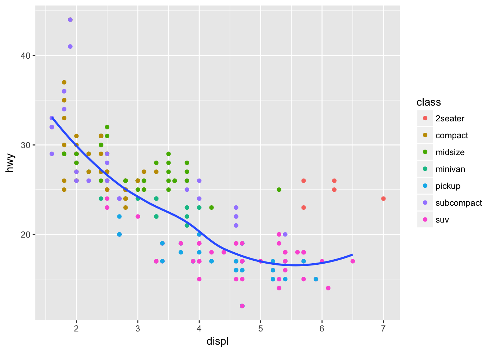
# just adjust the data going into the geom_smooth() layer- Take an exploratory graphic that you’ve created in the last month, and add informative titles to make it easier for others to understand.
data("ChickWeight")
ggplot(ChickWeight, aes(Time, weight, color = Diet)) +
geom_smooth(se = F) +
labs(title = "The Effect of Diet on Weight Gain",
y = "Weight (grams)",
x = "Time (days)")## `geom_smooth()` using method = 'loess'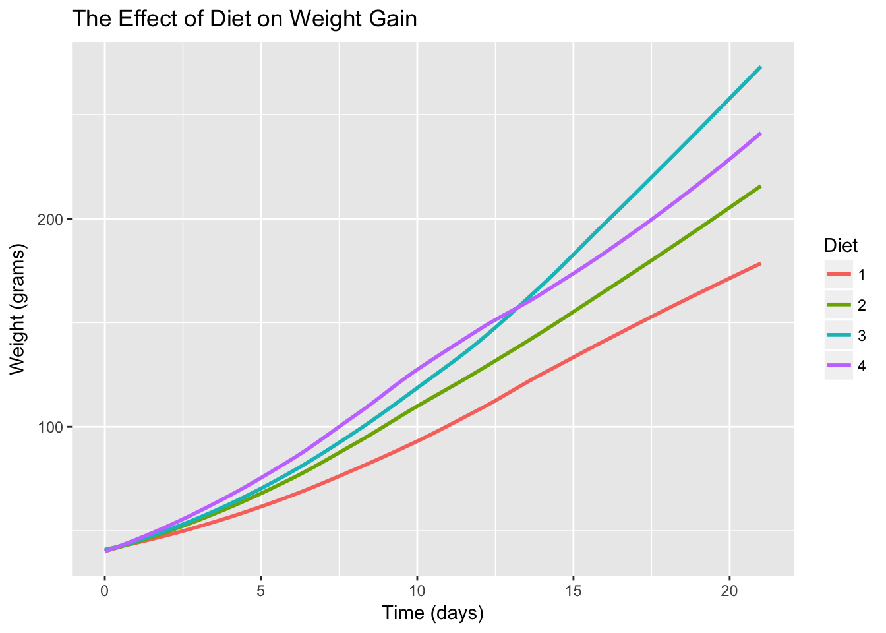
28.3.1 Annotations
- Use geom_text() with infinite positions to place text at the four corners of the plot.
corners <- tibble(x = c(0,1),
y = c(0,1))
ggplot(corners, aes(x,y)) +
geom_text(label = "bot_right", x = Inf, y = -Inf) +
geom_text(label = "top_right", x = Inf, y = Inf) +
geom_text(label = "bot_left", x = -Inf, y = -Inf) +
geom_text(label = "top_left", x = -Inf, y = Inf)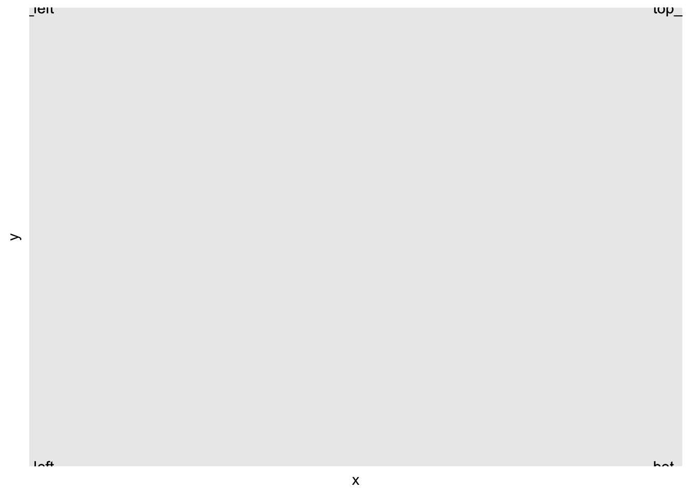
- Read the documentation for annotate(). How can you use it to add a text label to a plot without having to create a tibble?
?annotate
ggplot(corners, aes(x,y)) +
annotate("text", x = .5, y = .5, label = "Middle")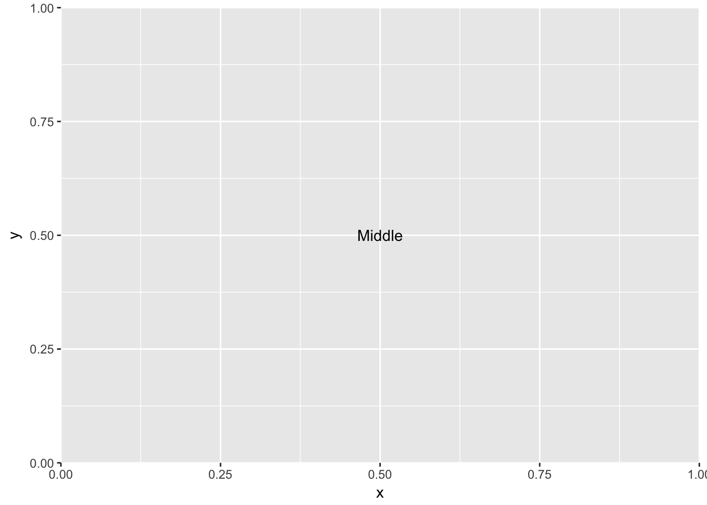
- How do labels with geom_text() interact with faceting? How can you add a label to a single facet? How can you put a different label in each facet? (Hint: think about the underlying data.)
mpg %<>% group_by(cyl) %>% mutate(avg_cty = round(mean(cty),1))
ggplot(data = mpg, aes(cty, hwy)) +
geom_point() +
geom_text(aes(label = avg_cty), y = 40, x = 15) +
facet_grid(~cyl)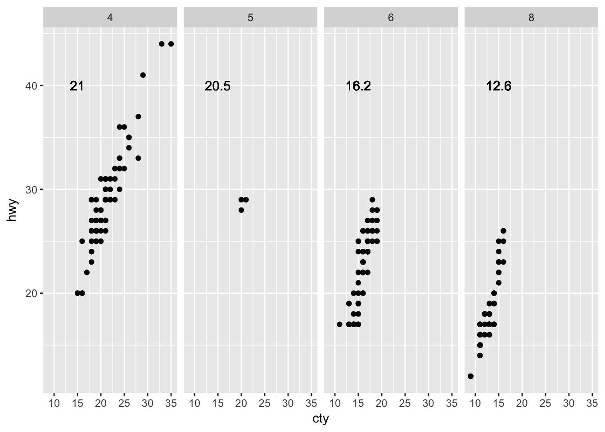
# delete unwanted labels for facets
mpg$avg_cty %<>% ifelse(mpg$cyl == 6, ., NA)
ggplot(data = mpg, aes(cty, hwy)) +
geom_point() +
geom_text(aes(label = avg_cty), y = 40, x = 15) +
facet_grid(~cyl)## Warning: Removed 155 rows containing missing values (geom_text).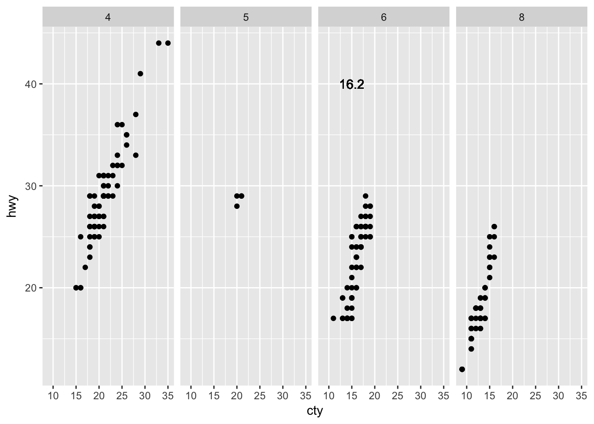
# really the best thing to do is use a seperate tibble
data(mpg)
avgs <- mpg %>% group_by(cyl) %>% summarise(avg_cty = round(mean(cty), 1))
ggplot(data = mpg, aes(cty, hwy)) +
geom_point() +
geom_text(data = avgs, aes(label = avg_cty), y = 40, x = 15) +
facet_grid(~cyl)- What arguments to geom_label() control the appearance of the background box?
ggplot(data = mpg, aes(cty, hwy)) +
geom_point() +
geom_label(data = avgs, aes(label = avg_cty, fill = as.factor(cyl)), y = 30, x = 15, alpha = .5) +
facet_grid(~cyl)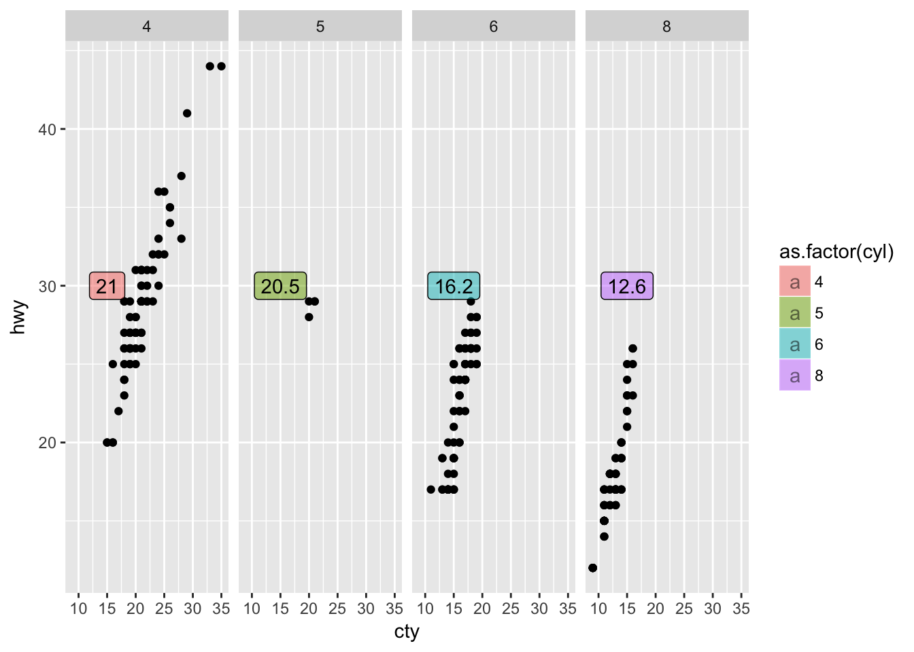
- What are the four arguments to arrow()? How do they work? Create a series of plots that demonstrate the most important options.
ggplot(mpg, aes())
arrow()## $angle
## [1] 30
##
## $length
## [1] 0.25inches
##
## $ends
## [1] 2
##
## $type
## [1] 1
##
## attr(,"class")
## [1] "arrow"# need to complete :(set.seed(1)
df <- tibble(
x = rnorm(10000),
y = rnorm(10000)
)
ggplot(df, aes(x, y)) +
geom_hex() +
scale_fill_gradient(low = "white", high = "red") +
coord_fixed()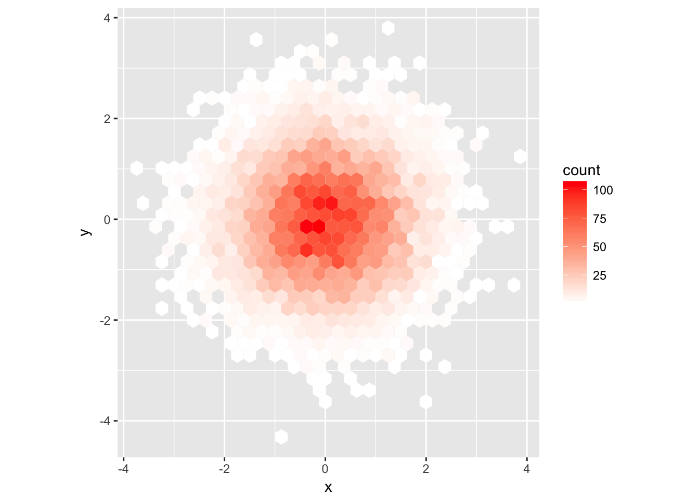
presidential %>%
mutate(id = 33 + row_number()) %>%
ggplot(aes(start, id, colour = party)) +
geom_point() +
geom_segment(aes(xend = end, yend = id)) +
scale_colour_manual(values = c(Republican = "red", Democratic = "blue")) +
scale_x_date(NULL, breaks = presidential$start, date_labels = "'%y")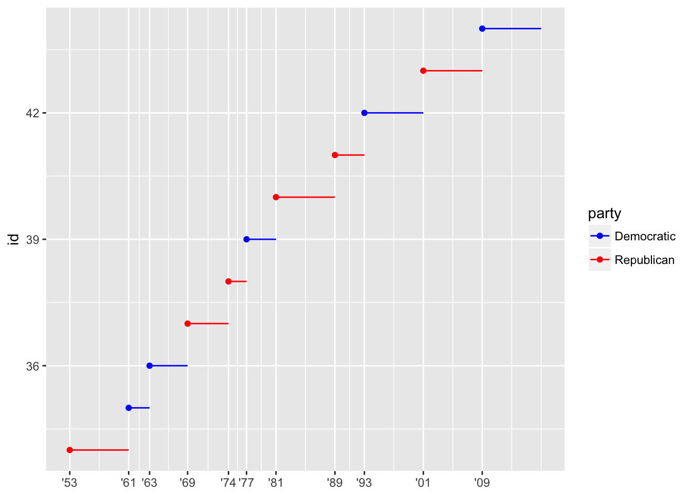
presidential %>%
mutate(id = 33 + row_number()) %>%
ggplot(aes(start, id, colour = party)) +
geom_point() +
geom_segment(aes(xend = end, yend = id)) +
scale_colour_manual(values = c(Republican = "red", Democratic = "blue")) +
scale_x_date(NULL, breaks = presidential$start, date_labels = "'%y") +
scale_y_continuous(breaks = 34:44)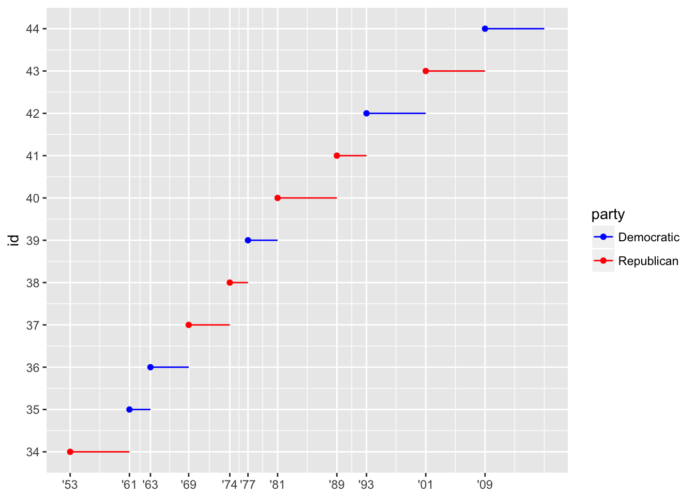
presidential %>%
mutate(id = 33 + row_number()) %>%
ggplot(aes(start, id, colour = party)) +
geom_point() +
geom_segment(aes(xend = end, yend = id)) +
scale_colour_manual(values = c(Republican = "red", Democratic = "blue")) +
scale_x_date(breaks = presidential$start, date_labels = "'%y", date_breaks = "4 years") +
scale_y_continuous(breaks = 34:44, labels = presidential$name) +
labs(x = "Is it there?")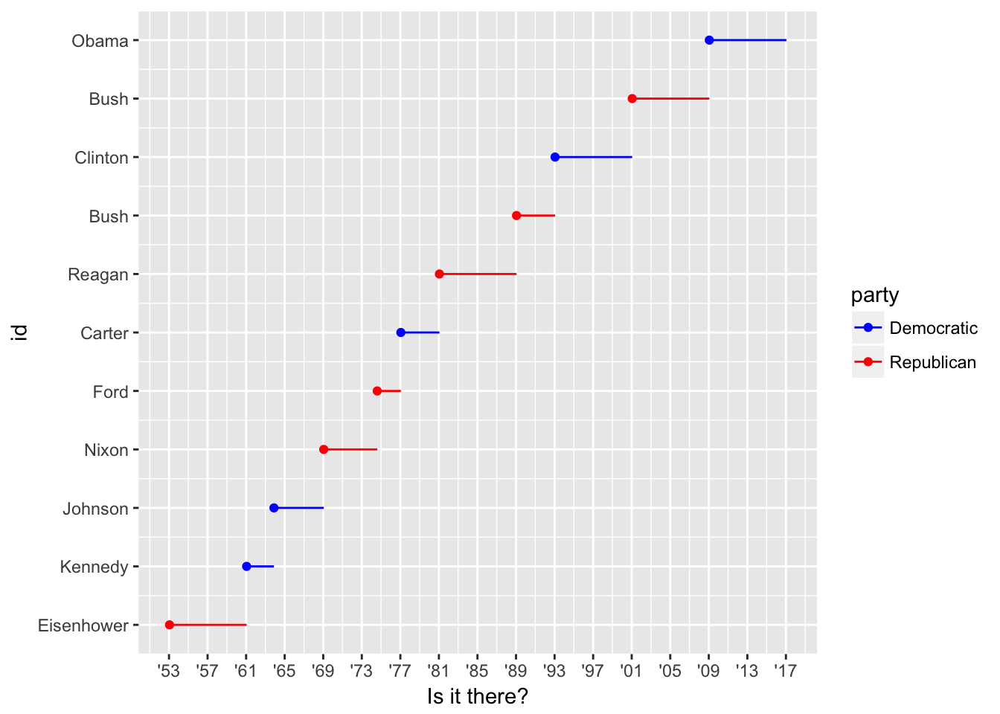
ggplot(diamonds, aes(carat, price)) +
geom_point(aes(colour = cut), alpha = 1/20) +
guides(color = guide_legend(title = "Because",override.aes = list(alpha = 1, shape = 24, size = 4)))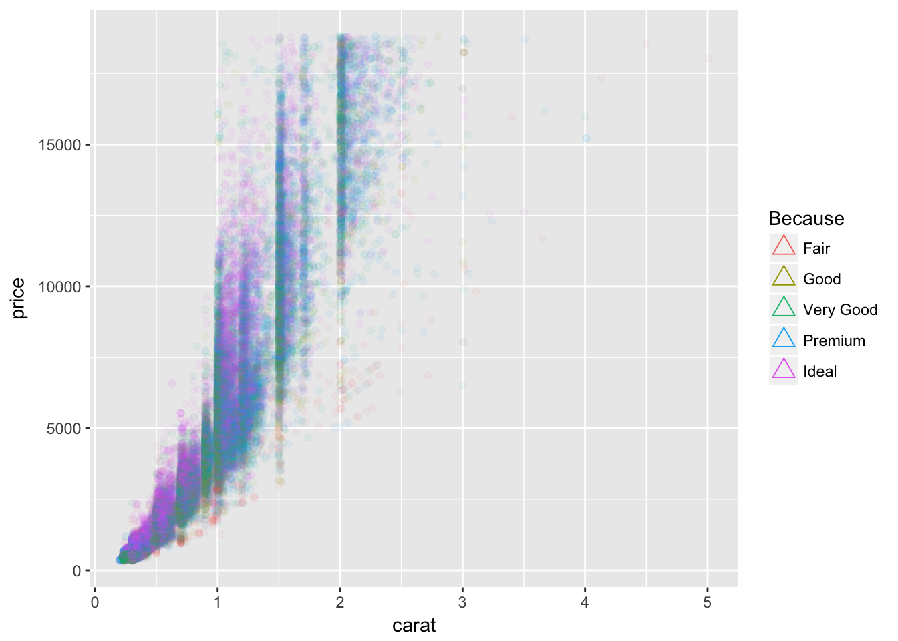
Still need to write up these last exercises, Christina and Crystal care to share their code :)
Built with Rmd. Hosted on Github. Maintained by me. Copyright © 2017.